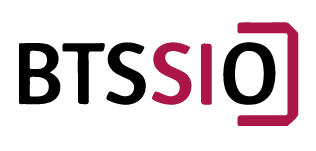

Le BTS SIO (Brevet Technicien Supérieur - Services Informatiques aux Organisations) est une formation d'une durée de 2 ans avec la possibilité de choisir une spécialité pour un domaine particulier (Solution Infrastructure Systèmes et Réseau - SISR ou Solution Logiciels Applications Métier - SLAM)
Le BTS avec l'option SLAM (que j'ai choisi) permet d'acquérir différentes compétences dans 3 domaines :
-> Support et Disposition des Services Informatiques :
Assurer la disponibilités des services informatiques, connaître les besoins informatiques dans une entreprise, gérer le patrimoine et les incidents, développer la présence de l'organisation sur le web.
-> Conception développement d'application :
Concevoir, déployer et maintenir des solutions applicatives (Web, Mobile), gestion de la base des données, données numériques et gestion des versions.
-> Cybersécurité des services informatiques :
Sécuriser l'infrastructure d'un réseau, d'un système ou d'un service. Analyse des risques encourus par l'entreprise, du côté technique, organisationnel et aussi juridique. Protection des données et de l'identité numérique. Sécurisation des équipements et des usages.
Source : Onisep
